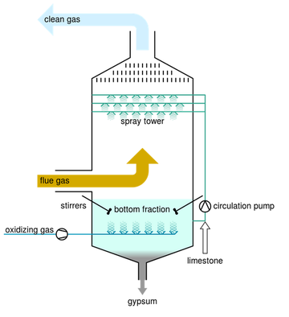

The exhaust gases of combustion may contain substances considered
harmful to the environment, and the scrubber may remove or
neutralize those. A wet scrubber is used for cleaning air, fuel gas
or other gases of various pollutants and dust particles. Wet
scrubbing works via the contact of target compounds or particulate
matter with the scrubbing solution. Solutions may simply be water
(for dust) or solutions of reagents that specifically target certain
compounds. Process exhaust gas can also contain water-soluble toxic
and/or corrosive gases like hydrochloric acid (HCl) or ammonia
(NH3). These can be removed very well by a wet scrubber.[4] Removal
efficiency of pollutants is improved by increasing residence time in
the scrubber or by the increase of surface area of the scrubber
solution by the use of a spray nozzle, packed towers or an
aspirator. Wet scrubbers may increase the proportion of water in the
gas, resulting in a visible stack plume, if the gas is sent to a
stack. Wet scrubbers can also be used for heat recovery from hot
gases by flue-gas condensation.In this mode, termed a condensing
scrubber, water from the scrubber drain is circulated through a
cooler to the nozzles at the top of the scrubber. The hot gas enters
the scrubber at the bottom. If the gas temperature is above the
water dew point, it is initially cooled by evaporation of water
drops. Further cooling causes water vapors to condense, adding to
the amount of circulating water. The condensation of water releases
significant amounts of low temperature heat due to the high value of
the specific latent heat of the vaporisation of water (more than 2
gigajoules (560 kWh) per ton of water[5]), which can be recovered by
the cooler for e.g. district heating purposes. Excess condensed
water must continuously be removed from the circulating water.